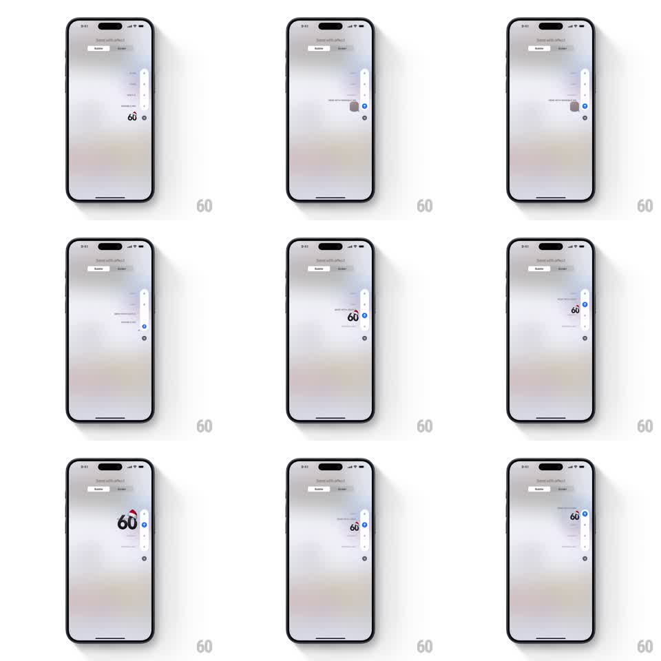

Media
Frame-by-frame

Rebuild this interaction 1:1: Apple Messages' bubble effect slider - a vertical slider at the right edge of the "Send with effect" screen previews each bubble effect live as you drag through its stops, the message bubble acting out Slam, Loud, Gentle, and Invisible Ink with springy transitions.

Rebuild this interaction 1:1: Apple Messages' bubble effect slider - a vertical slider at the right edge of the "Send with effect" screen previews each bubble effect live as you drag through its stops, the message bubble acting out Slam, Loud, Gentle, and Invisible Ink with springy transitions. ## Integration Integration: stack-agnostic spec - springs given as stiffness/damping, timed motions as duration + curve; map every value to your framework and animation library of choice. ## Scene The Messages "Send with effect" screen on the Bubble tab: the blurred conversation behind, the composed message bubble center-right, and a slim vertical slider pinned to the right edge with a draggable dot and labeled stops (Slam, Loud, Gentle, Invisible Ink). Dragging the dot previews the effect on the bubble in place. ## Motion spec Pattern: effect scrubber slider, gesture-driven. - The slider dot tracks the drag 1:1 vertically; on release it snaps to the nearest stop (spring stiffness 400 damping 22). - Each stop triggers its preview on the bubble, interruptible at any point: - Slam: the bubble hurls in large from the right and slams into place (300ms, ease-in) with a screen shake (plus/minus 4px, 200ms) and a dust ripple. - Loud: the bubble appears huge and settles to normal size with a wobble (spring stiffness 250 damping 10, 600ms). - Gentle: the bubble appears tiny and grows softly to normal (500ms, ease-out). - Invisible Ink: the bubble dissolves into shimmering particles that re-coalesce (800ms). - The active stop's label highlights; haptic-style tick per stop passed. ## Calibration - Previews replay in place on the same bubble - the conversation behind never changes. - Snapping is snappy but soft: no hard stops, always a small overshoot. ## Reduced motion Bubble crossfades between effect states. ## Don't miss - The slider is vertical at the right edge, thin and unobtrusive. - Dragging back and forth re-triggers previews each time a stop is crossed - it is a scrubber, not a one-shot menu.